Service Portal
사용 중인 서비스들의 요약 정보와 구성원들의 권한, Cloud Account, 서비스 그룹을 관리할 수 있습니다.
사용자 그룹 관리
Service Portal - User Group사용자의 권한 관리는 유저 그룹을 통해 이루어집니다.
유저 그룹에 컴퍼니 그룹을 연결해 유저 그룹 내 모든 사용자들의 권한을 일괄 적용할 수 있습니다.
유저 그룹에는 여러개의 컴퍼니 그룹을 연결할 수 있으며, 유저 그룹의 사용자들은 컴퍼니 그룹에 포함된 회사들의 서비스/메뉴 별 권한, 클라우드 Account 들에 대한 권한을 가지게 됩니다.
위 그룹들은 아래와 같은 구조로 연결되어 있습니다.
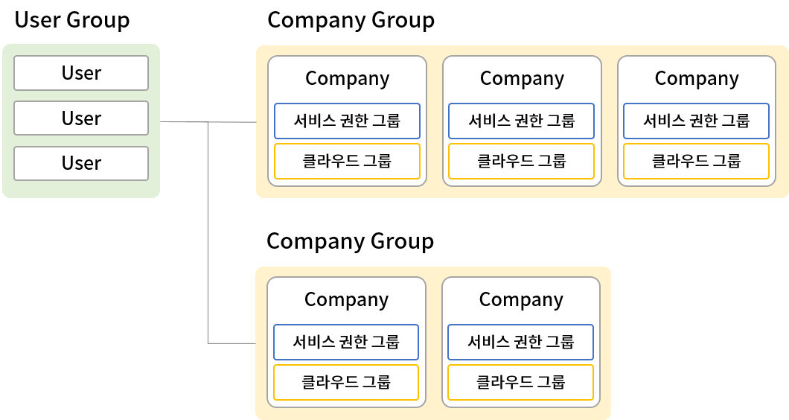
1. 새 유저 그룹 만들기
새로운 유저 그룹을 생성하고, 컴퍼니 그룹을 연결해 유저 그룹의 권한을 설정할 수 있습니다.
1.1 유저 그룹 만들기
-
[그룹 추가] 버튼을 클릭합니다.
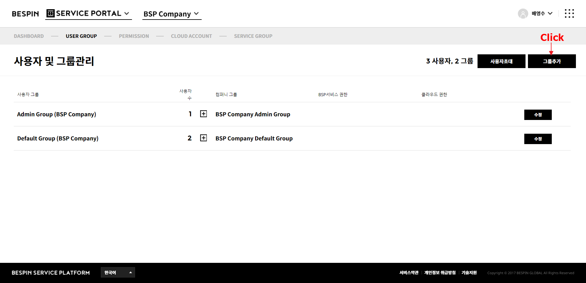
-
"새로운 사용자 그룹 생성" 팝업이 표시됩니다.
새롭게 생성할 유저 그룹의 이름을 입력 후, [확인] 버튼을 클릭합니다.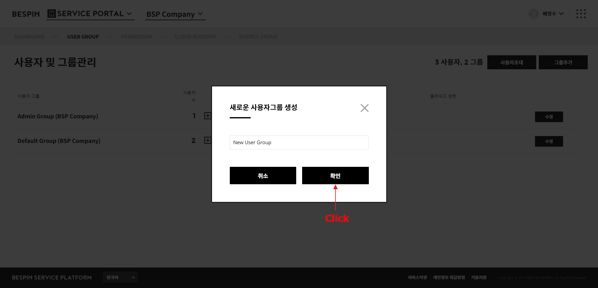 -
유저 그룹 목록에 새로운 유저 그룹이 추가된 것을 확인할 수 있습니다.
1.2 유저 그룹에 사용자 추가하기
-
유저 그룹 목록에서 새롭게 추가된 유저 그룹의 [수정] 버튼을 클릭합니다.
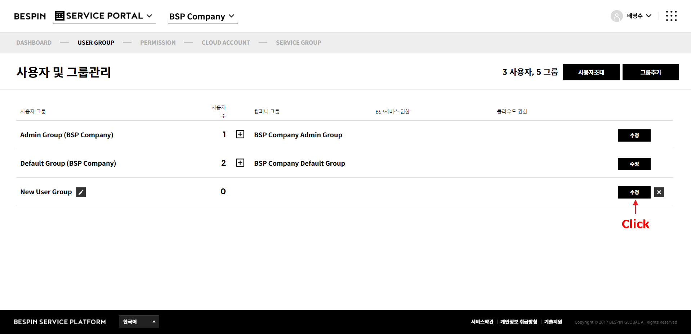
-
사용자 목록의 [{더하기}] 버튼을 클릭합니다.
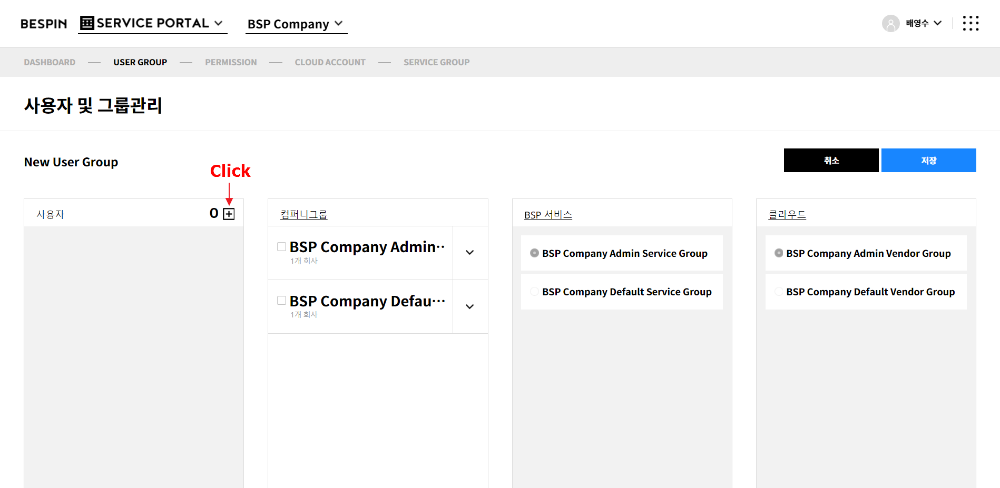
-
"그룹 사용자 수정" 팝업이 표시됩니다.
팝업의 왼쪽 목록에는 현재 유저 그룹에 추가된 사용자가 표시되고, 오른쪽 목록에는 현재 회사에 가입된 모든 사용자가 표시됩니다. 오른쪽 목록에서 새로운 유저 그룹에 추가할 사용자를 선택 후 [<-] 버튼을 클릭합니다.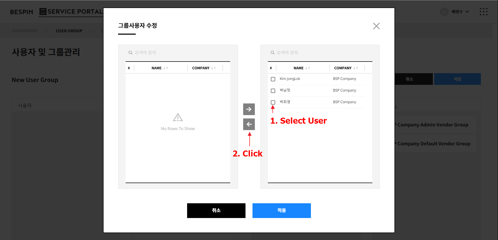 -
사용자 추가 후 [적용] 버튼을 클릭합니다.
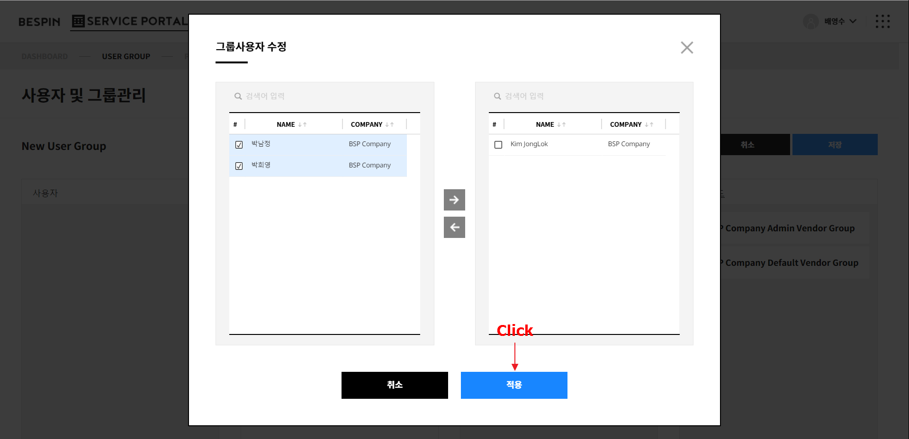
-
사용자 목록에 선택한 사용자가 유저 그룹에 추가되었음을 확인할 수 있습니다.
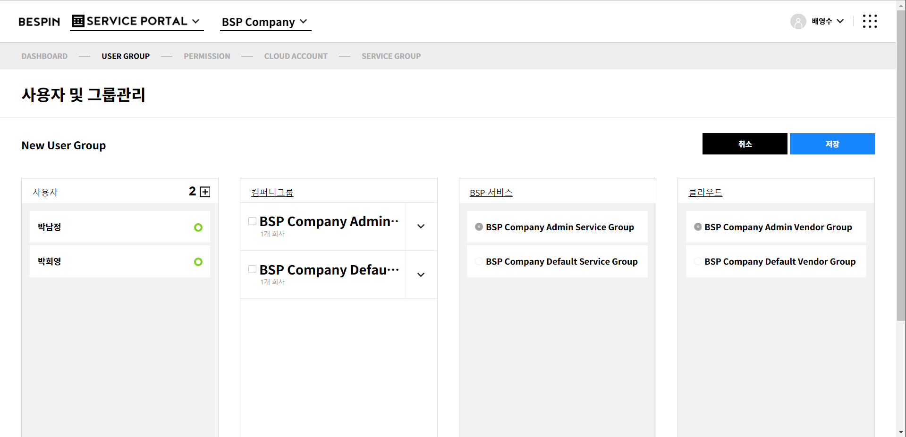
1.3 유저 그룹에 권한 설정하기
-
유저 그룹에 연결할 컴퍼니 그룹을 선택합니다.
컴퍼니 그룹 목록에서 연결할 컴퍼니 그룹의 체크박스를 선택합니다.
여러개의 컴퍼니 그룹을 선택할 수 있습니다.
컴퍼니 그룹은 권한 관리 메뉴에서 설정할 수 있습니다. -
연결한 컴퍼니 그룹을 펼쳐 회사 목록을 확인합니다.
회사를 선택하면 선택한 회사에 연결된 "서비스 권한 그룹" 목록과 "클라우드 그룹" 목록이 표시됩니다.
선택한 유저 그룹에 부여할 회사 별 서비스 권한 그룹과 클라우드 그룹을 선택합니다.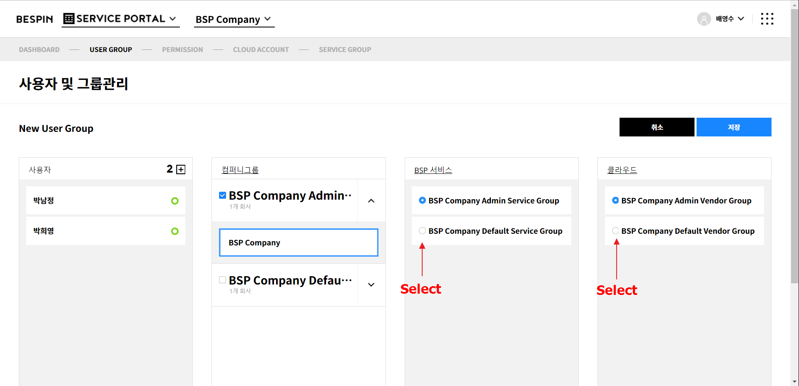 -
[저장] 버튼을 클릭합니다.
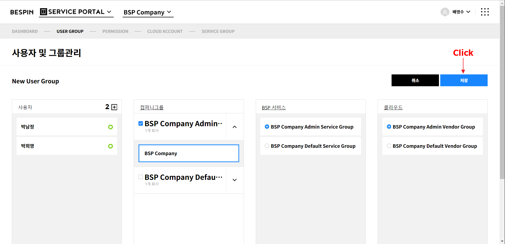
-
유저 그룹 목록으로 돌아가 선택한 권한이 적용된 것을 확인할 수 있습니다.
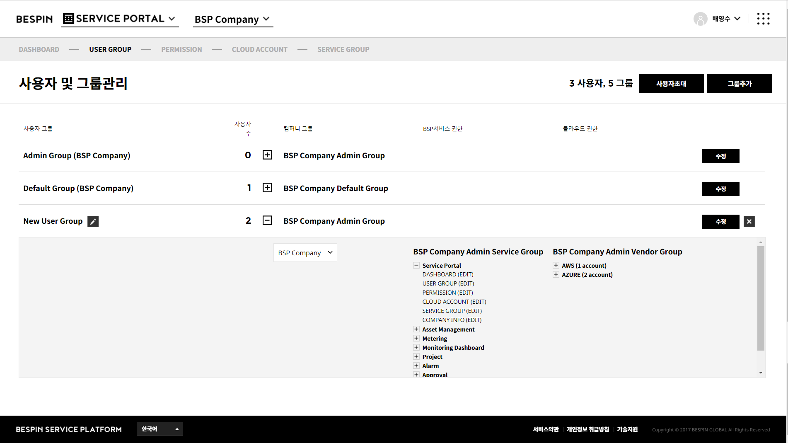
2. 유저 그룹 수정하기
기존 유저 그룹의 구성원을 수정하거나, 권한을 변경할 수 있습니다.
2.1 유저 그룹에 사용자 추가/제거하기
-
유저 그룹 목록에서 구성원을 추가/제거할 유저 그룹의 [수정] 버튼을 클릭합니다.
-
사용자 목록의 [+] 버튼을 클릭합니다.
-
"그룹 사용자 수정" 팝업이 표시됩니다.
오른쪽 전체 목록에서 유저 그룹에 추가할 사용자를 선택 후 [<-] 버튼을 클릭하거나(추가), 왼쪽 유저 그룹 내 사용자 목록에서 사용자 선택 후 [->]을 클릭합니다.(제거) -
사용자 편집 후 [적용] 버튼을 클릭합니다.
-
사용자 목록에서 사용자가 수정되었음을 확인할 수 있습니다.
2.2 유저 그룹의 권한 변경하기
- 유저 그룹 목록에서 권한을 변경할 유저 그룹의 [수정] 버튼을 클릭합니다.
-
"컴퍼니 그룹"을 변경해 연결할 컴퍼니 그룹을 변경할 수 있습니다.
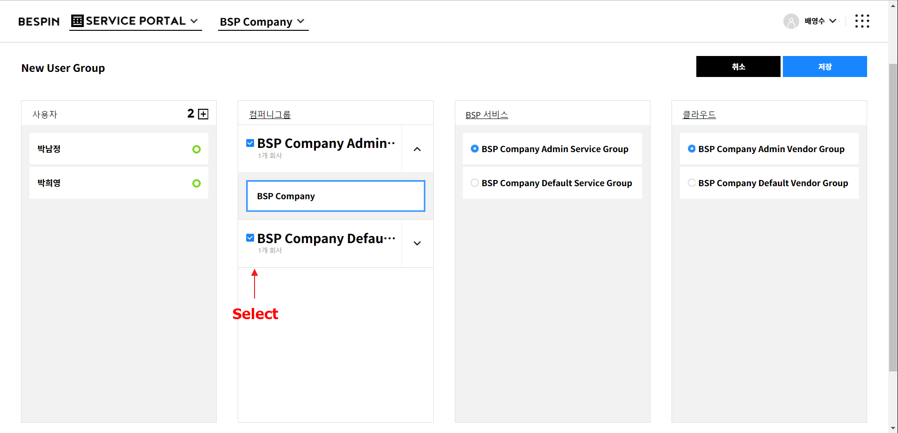
-
선택된 "컴퍼니 그룹"에서 회사를 선택해 회사 별로 "서비스 권한 그룹", "클라우드 그룹"을 선택해 권한을 변경할 수 있습니다.
- [저장] 버튼을 클릭해 변경 내용을 저장합니다.
3. 유저 그룹 삭제하기
유저 그룹을 삭제할 수 있습니다.
유저 그룹 삭제 시 유저 그룹에 포함되어 있던 유저들은 Default Group으로 이동합니다.
-
삭제할 유저 그룹 선택 후, [x] 버튼을 클릭합니다
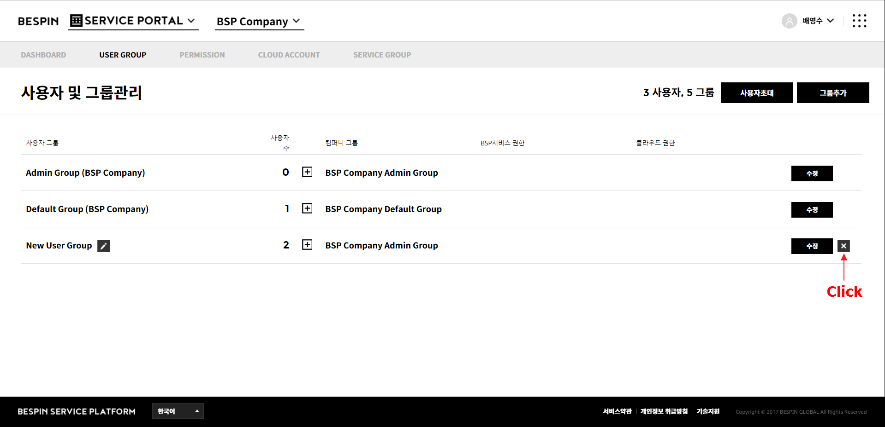
-
"그룹 삭제 확인" 팝업이 표시됩니다.
[확인] 버튼 클릭시 유저 그룹이 삭제되고, 기존 유저는 Default Group으로 이동합니다.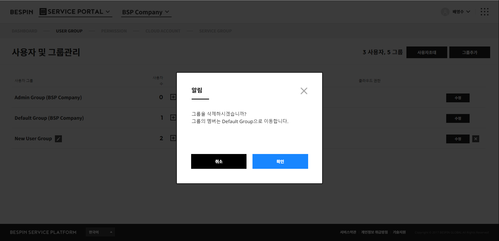
4. 유저 그룹에 새 사용자 초대하기
회사에 새로운 유저를 초대해 회사의 구성원으로 만들 수 있습니다.
-
[사용자 초대] 버튼을 클릭합니다.
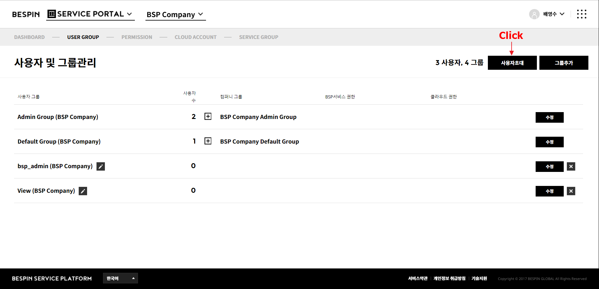
-
"사용자 초대" 팝업이 표시됩니다.
이 팝업에서 초대할 사용자의 이메일 주소와 초대할 사용자가 소속될 유저 그룹을 선택 후 [보내기] 버튼을 클릭합니다.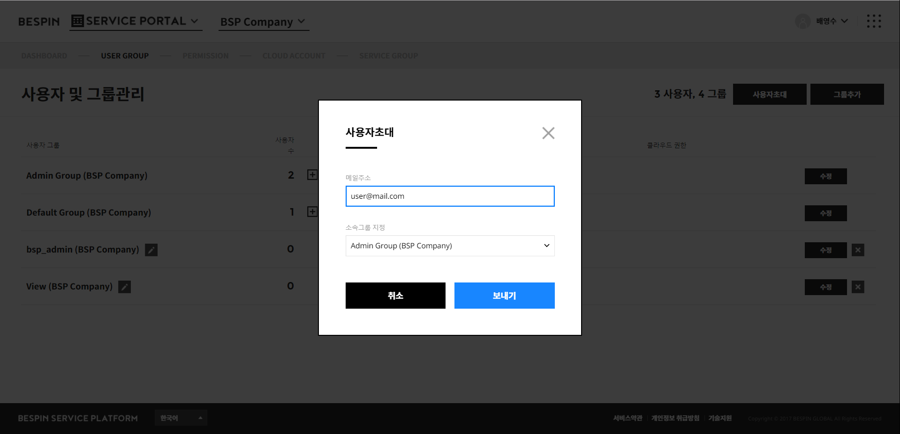 -
입력한 메일 주소로 초대 메일이 발송됩니다.
이 메일을 통해 계정을 생성하면 사용자 초대가 완료됩니다.